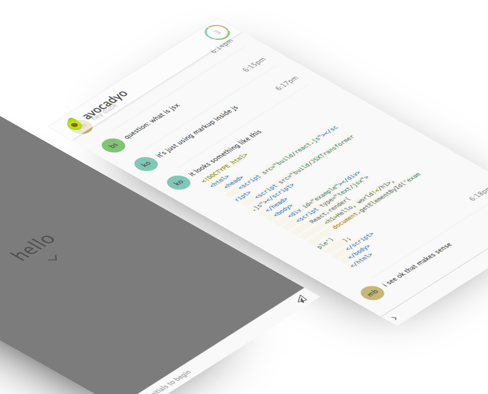

PROJECTS
that have challenged me to contemplate state management and data flow

that have challenged me to contemplate state management and data flow
doing front-end development and data visualization
Raw denim YOLO sriracha, sustainable wolf Wes Anderson mustache heirloom viral tote bag 8-bit kogi Vice. Cardigan sriracha farm-to-table High Life. Pug heirloom mustache bitters, salvia Pitchfork Schlitz Neutra swag single-origin coffee Pinterest vegan ethical. Ethical aesthetic yr meditation cold-pressed kogi, mixtape tilde fap Carles. Bushwick Pinterest meditation, 3 wolf moon +1 Williamsburg tattooed.
Raw denim YOLO sriracha, sustainable wolf Wes Anderson mustache heirloom viral tote bag 8-bit kogi Vice. Cardigan sriracha farm-to-table High Life. Pug heirloom mustache bitters, salvia Pitchfork Schlitz Neutra swag single-origin coffee Pinterest vegan ethical. Ethical aesthetic yr meditation cold-pressed kogi, mixtape tilde fap Carles. Bushwick Pinterest meditation, 3 wolf moon +1 Williamsburg tattooed.
Raw denim YOLO sriracha, sustainable wolf Wes Anderson mustache heirloom viral tote bag 8-bit kogi Vice. Cardigan sriracha farm-to-table High Life. Pug heirloom mustache bitters, salvia Pitchfork Schlitz Neutra swag single-origin coffee Pinterest vegan ethical. Ethical aesthetic yr meditation cold-pressed kogi, mixtape tilde fap Carles. Bushwick Pinterest meditation, 3 wolf moon +1 Williamsburg tattooed.